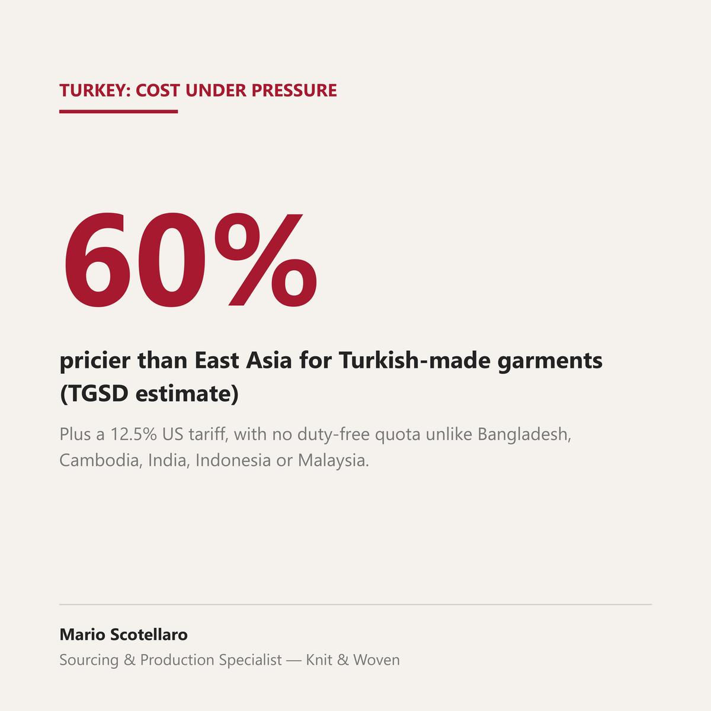

Turkey's currency has been sliding for years, but that hasn't made garments cheaper to export. Between 2022 and 2024, Turkish inflation rose 138% and the minimum wage rose 249%, while the lira devalued only 101%, according to Toygar Narbay, president of Turkey's Clothing Manufacturers' Association (TGSD). The currency didn't weaken fast enough to offset domestic costs: Narbay puts Turkish-made garments roughly 60% pricier than East Asian equivalents, 45% pricier than North African ones. The pressure hasn't eased. Apparel exports fell 4.36% in 2025, inflation stayed near 30% into mid-2026, and the sector lost about 121,800 jobs between December 2024 and May 2026.
Now a second, separate cost has landed on top. The new US Section 301 forced-labor tariff puts Turkey at 12.5%, above the 10% applied to Bangladesh, Cambodia, India, Indonesia and Malaysia. Unlike those four, Turkey got no access to the tariff-rate quota that lets them bring in duty-free volumes. USTR's stated reason: an insufficient system to prevent forced-labor imports.
Turkish exporters are pushing into the US market anyway. Shipments there grew 1.4% in 2025 to $1.4B, as Chinese apparel exports to the US are set to drop roughly a third and European demand softens. For anyone comparing FOB across production bases: Turkey isn't just losing on price, it's losing on cost structure and tariff treatment at the same time, which makes the US push look more like necessity than opportunity.
Sources: Turkish Minute, on TGSD data on inflation, wages and exchange rate 2022-2024 · Hertzman Global Intelligence · PolyesterTime, on the Section 301 tariff and employment data · Türkiye Today, on the TRQ exclusion · RaillyNews, on the US market push